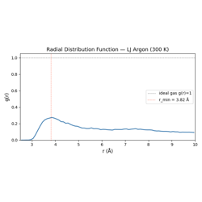
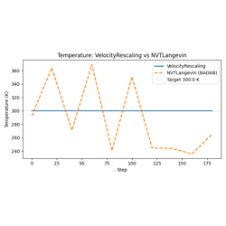
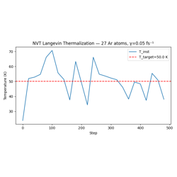
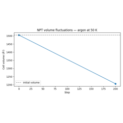

Examples#
End-to-end examples demonstrating ALCHEMI Toolkit functionality.
Advanced Examples#
These examples are for users who want to extend the nvalchemi-toolkit framework. They require understanding of the intermediate tier.
01 — Biased Potential: BiasedPotentialHook for harmonic COM restraints and umbrella sampling patterns.
02 — Custom Hook: Implementing the Hook protocol with a full radial distribution function accumulator.
03 — Custom Convergence: ConvergenceHook with multiple criteria and custom_op for arbitrary convergence logic.
04 — MACE NVT: Using a real MACE MLIP for NVT dynamics; automatic neighbor list wiring via ModelCard; LJ fallback for CI.
05 — Custom Integrator: Subclassing BaseDynamics to implement a velocity-rescaling thermostat; the pre_update/post_update contract; _init_state for stateful integrators.

Writing a Custom Hook: Radial Distribution Function



Building a Custom Integrator by Subclassing BaseDynamics

Basic Examples#
These examples introduce the core nvalchemi-toolkit workflow to users familiar with tools like ASE. Each script focuses on one feature set and runs end-to-end on a single GPU in under 60 seconds.
01 — Data Structures: AtomicData and Batch API. 02 — Geometry Optimization: FIRE optimizer with NeighborListHook and ConvergenceHook. 03 — ASE Integration: Loading ASE structures, FreezeAtomsHook on a surface system. 04 — NVE MD: Microcanonical dynamics, WrapPeriodicHook, EnergyDriftMonitorHook. 05 — NVT MD: Langevin thermostat, thermalization, LoggingHook to CSV.

AtomicData and Batch: Graph-structured molecular data

FIRE Geometry Optimization with Lennard-Jones Argon

ASE Integration: Real Molecular Structures in nvalchemi-toolkit

Canonical (NVT) Molecular Dynamics with Langevin Thermostat
Distributed Pipeline Examples#
These examples demonstrate multi-GPU distributed simulation pipelines
using DistributedPipeline. They require
multiple GPUs and must be launched with torchrun.
Warning
These examples are not executed during the Sphinx documentation
build. To run them, use torchrun as shown in each example.
Architecture Overview#
A DistributedPipeline maps GPU ranks to
dynamics stages. Systems flow between stages via fixed-size NCCL
communication buffers:
┌──────────────────┐ ┌────────────────────┐
│ Rank 0: FIRE │────→│ Rank 1: Langevin │
│ (upstream) │NCCL │ (downstream + sink)│
└──────────────────┘ └────────────────────┘
Key concepts:
Upstream ranks (
prior_rank=None): hold aSizeAwareSamplerand push graduated (converged) systems to the next rank.Downstream ranks (
next_rank=None): receive systems from the prior rank and write results to a sink.BufferConfig: must be set to a fixed size on all ranks; NCCL requires identical message sizes every communication step.
torchrun --nproc_per_node=Nlaunches one process per GPU; each process runs only the stage assigned to its rank.
Running the Examples#
01 — Parallel FIRE → Langevin (4 GPUs required):
torchrun --nproc_per_node=4 examples/distributed/01_distributed_pipeline.py
# CPU/debug mode (set backend="gloo" in the script first):
torchrun --nproc_per_node=4 --master_port=29500 examples/distributed/01_distributed_pipeline.py
02 — Monitoring with LoggingHook, ProfilerHook, and ZarrData (4 GPUs required):
torchrun --nproc_per_node=4 examples/distributed/02_distributed_monitoring.py
After running example 02, per-rank CSV logs and Zarr trajectory stores are written to the working directory. Rank 0 also prints a collated summary.
Example Descriptions#
- 01 — Distributed Pipeline
Two independent FIRE → NVTLangevin sub-pipelines running on 4 GPUs. Demonstrates DistributedPipeline wiring, BufferConfig, and HostMemory sinks. Based on the original
examples/05_distributed_pipeline_example.py.- 02 — Distributed Monitoring
Same topology as example 01, augmented with per-rank LoggingHook and ProfilerHook for observability, and ZarrData sinks for persistent trajectory storage. Shows post-run log collation on rank 0.

Distributed Multi-GPU Pipeline: Parallel FIRE → Langevin

Monitoring a Distributed Pipeline: Per-Rank Logging and Profiling
Intermediate Examples#
These examples assume familiarity with the basic tier and introduce the storage layer, performance monitoring, and more complex pipeline patterns.
01 — Multi-Stage Pipeline: FusedStage composition, LoggingHook CSV output, step-budget migration, fused hooks for global status monitoring.
02 — Trajectory I/O: Writing trajectories to Zarr, reading back with DataLoader, round-trip validation.
03 — NPT MD: Pressure-controlled dynamics with the MTK barostat, LJ stress computation, cell fluctuation monitoring.
04 — Inflight Batching: SizeAwareSampler, Mode 2 FusedStage run (batch=None), system_id tracking, ConvergedSnapshotHook collecting results.
05 — Safety and Monitoring: NaNDetectorHook, MaxForceClampHook, EnergyDriftMonitorHook, ProfilerHook — defensive MD patterns.



Pressure-Controlled (NPT) Molecular Dynamics


Defensive MD: Safety Hooks and Performance Monitoring